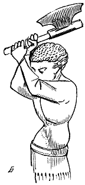
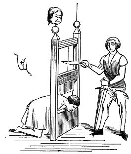
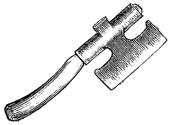
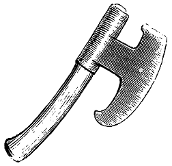

Eugène VIOLLET le DUC
Dictionnaire raisonné du mobilier.
DOLOIRE, s. f. (dolores, doloeiere) Outil en forme de hache à long tranchant court et douille, dont se servaient les charpentiers, les tonneliers, les charrons.
La doloire était un des instruments le plus en usage dans les corps d'état qui travaillaient le bois, et même chez les gens de la campagne. « les instruments de ce mesnage (la coupe des taillis) sont doloires ou haches bien tranchantes, avec lesquelles le bois se coupera de tous côtés, de peur d'en rien escorcer n'esclatter »
En Angleterre, on tranchait la tête aux criminels (nobles) avec la doloire : « ... qu'elle eust la teste couppée comme l'on fait en France avec une espée, et non avec un doulouere à la façon d'Angleterre. »

Figure 1
 Figure 2 On voit cet usage adopté dès le XIVe siècle (fig. 1). D'ailleurs il paraitrait que plusieurs moyens étaient usités pour trancher la tête aux criminels ; il n'y avait pas que l'épée et la hache ou doloire, il y avait aussi un instrument semblable à notre guillotine, ainsi que le démontre de la manière la plus évidente la vignette d'un manuscrit du XVe siècle, dont nous donnons (fig. 2) la copie. Le bourreau coupe la corde qui suspend un large couteau glissant entre deux montants rainés. Si chargé qu'il le fût, ce couteau à tranchant horizontal pouvait ne pas produire l'effet qu'on en attendait, aussi le bourreau est-il muni d'une épée.
La forme la plus ancienne donnée aux doloires des gens de métiers est représentée figure 3. Plus tard, au XIIIe siècle, elles n'ont plus ce renfort carré postérieur pouvant servir de marteau ; leur tranchant est sensiblement recourbé.
|
 Figure 3 |
 Figure 4 |